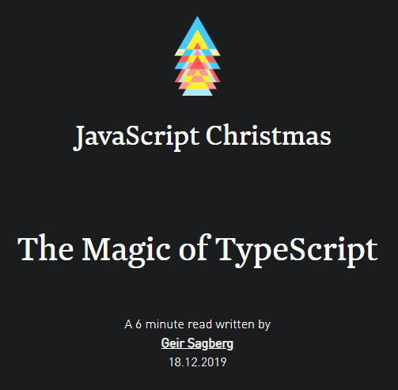

class: front-page # Funksjonell TypeScript ## Bekk Trondheim Miniseminar Geir Sagberg 11.12.2019 --- # The Magic of TypeScript .middle.center[] --- # Lag ditt eget FP-bibliotek ``` // Make your own functional library // Map export function map<TIn, TOut>(input: TIn[], fn: (t: TIn) => TOut) {} // Reduce export function reduce<TIn, TOut>(input: TIn[], fn: (prev: TOut, curr: TIn) => TOut, seed: TOut) {} // Compose export function compose<F, FG, G>(f: (x: F) => FG, g: (x: FG) => G) {} // Identity export function identity<T>(x: T) {} ``` --- # Lag ditt eget FP-bibliotek ``` // Map export function map<TIn, TOut>(input: TIn[], fn: (t: TIn) => TOut) { let output: TOut[] = [] for (let i = 0; i < input.length; i++) { output[i] = fn(input[i]) } return output } // Reduce export function reduce<TIn, TOut>(input: TIn[], fn: (prev: TOut, curr: TIn) => TOut, seed: TOut) { for (let i = 0; i < input.length; i++) { seed = fn(seed, input[i]) } return seed } ``` --- # Lag ditt eget FP-bibliotek ``` // Compose export function compose<F, FG, G>(f: (x: F) => FG, g: (x: FG) => G) { const composed = (x: F) => g(f(x)) return composed } // Identity export function identity<T>(x: T) { return x } ``` --- # Lag typings for Lodash ``` declare module 'lodash-es' { export function map(input: any, mapFn: any): any export function reduce(input: any, reduceFn: any, seed: any): any export function pick(input: any, props: any): any export function some(collection: any, predicate: any): any // Add your own favourite lodash functions here } ``` --- # Lag typings for Lodash ``` declare module 'lodash-es' { export function map<T, U>(input: Array<T>, mapFn: (item: T) => U): Array<U> export function reduce<T, U>(input: Array<T>, reduceFn: (prev: U, curr: T) => U, seed: U): U export function pick<T, U extends keyof T>(input: T, props: U): Pick<T, U> export function some<T>(collection: Array<T>, predicate: (x: T) => boolean): boolean } ``` --- class: center middle bekk-top # Prøv selv! https://github.com/geirsagberg/fp-ts-workshop